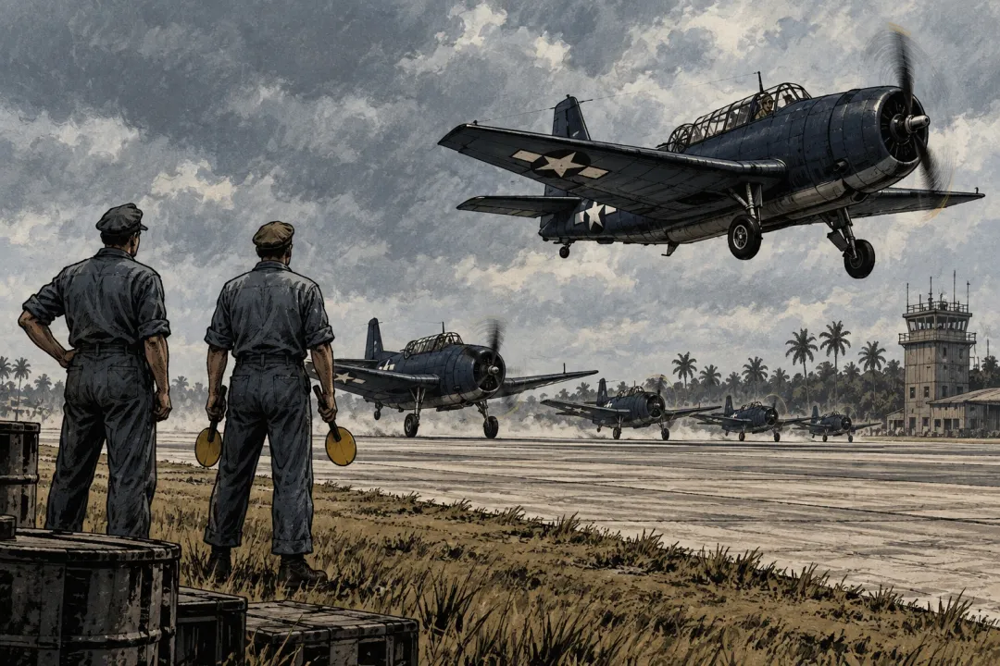

"버뮤다 삼각지대에서 폭격기 5대와 수색기까지 하루에 27명이 사라짐"
오후 2시 10분, 평범한 훈련 비행이 뜸
1945년 12월 5일, 미국 플로리다 포트로더데일 해군 항공기지.
전쟁이 끝난 지 넉 달째였음. 그날 오후 뇌격기 다섯 대가 이륙함. 편대 이름은 19편대.
임무는 훈련이었음. 정해진 코스를 삼각형으로 돌면서 폭격 연습을 하고 돌아오는 항법 훈련. 교과서에 있는 기본 과정임.
탄 사람은 14명. 원래 15명이어야 했는데 한 명이 그날 훈련에서 빼달라고 해서 빠졌음.
출발은 예정보다 25분 늦은 오후 2시 10분. 교관이 늦게 도착했기 때문임.
날씨는 괜찮았고, 바다는 조금 거칠었음.

좋아요 17
댓글 11
리포스트 2
공유 0